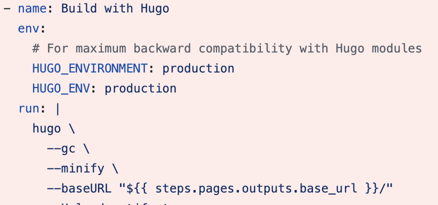
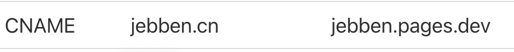

排查与定位
配置SEO robots的地方是 _default/baseof.html里：
{{ $production := eq (getenv "HUGO_ENV") "production" | or (eq site.Params.env "production") }}
{{ $public := not .Params.private }}
{{ if and $production $public }}
<meta name="robots" content="index, follow">
{{ else }}
<meta name="robots" content="noindex, nofollow">
{{ end }}
上面的代码会先检查HUGO_ENV环境变量是否为production，并且网页是否设置了private私有,当环境变量为production并且不是私有页面会允许搜索引擎抓取：
<meta name="robots" content="index, follow">
否则不允许。
经过排查，在自定义的工作流：.github/workflows/flow.yml里已经设置了环境变量：

百思不得其解。最后在github Actions里发现了端倪,原来我在cloudflare里启用了pages功能并配置了DNS记录：

这样，后续访问的是cloudflare pages版本而不是github pages版本了，由于疏忽，启用时忘记设置环境变量了。
解决方案
即然有两个pages，只需要保留一个即可，经过对比发现cloudflare pages更加的简单好用，无需配置自定义的workflow，并且每次提交github上也能看到cloudflare的build进程，然后我的域名也在cloudflare下。
于是打算放弃github pages：
- 删除github pages
- 删除github workflow
然后推送一个空提交，触发CI&CD,完美解决。
 Hugo, github pages, cloudflare pages
Hugo, github pages, cloudflare pages